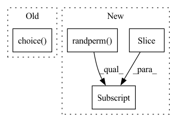

Pattern ID :4935
Before Change
neg_roi_per_this_image = self.n_sample - pos_roi_per_this_image
neg_roi_per_this_image = int(min(neg_roi_per_this_image, neg_index.size))
if neg_index.size > 0:
neg_index = np.random.choice( neg_index, size=neg_roi_per_this_image, replace=False)
// 将正负样本的roi索引合并到一起
keep_index = np.append(pos_index, neg_index)
// 从所有roi中挑选出正负样本的labelAfter Change
pos_roi_per_this_image = int(min(pos_roi_per_image, pos_num))
if pos_num > 0: // 兼容 0-d tensor
// pos_index = np.random.choice(pos_index, size=pos_roi_per_this_image, replace=False)
pos_index = pos_index[torch.randperm(pos_num)[:pos_roi_per_this_image] ]
// 获取那些IOU在[neg_iou_thresh_lo, neg_iou_thresh_hi)区间的roi索引
// 其实这里感觉分配的不是很合理,因为IOU=0.49与0.51在数值上区别很小.人眼更是几乎看不出来(除非写轮眼) TODO 待实验 hi↑ lo↓
// neg_index = np.where((max_iou < self.neg_iou_thresh_hi) & (max_iou >= self.neg_iou_thresh_lo))[0]In pattern: SUPERPATTERN
Frequency: 3
Non-data size: 4
Instances Fragment ID: 17380361
Project Name: pangkun248/faster-rcnn-pytorch
Commit Name: 811d49713cf13070465c16e51d96db0077647739
Time: 2021-08-26
Author: 39581901+pangkun248@users.noreply.github.com
File Name: utils/creator_tool.py
M Class Name: ProposalTargetCreator
N Class Name: ProposalTargetCreator
M Method Name: __call__(4)
N Method Name: __call__(6)
M Parent Class: object
N Parent Class: object
M File Name: utils/creator_tool.py
N File Name: utils/creator_tool.py
M Start Line: 176
M End Line: 224
N Start Line: 231
N End Line: 281
Before Change
if self.mode == "whole":
mask = torch.zeros(node_num)
mask_num = int(node_num * self.mask_ratio)
idx_mask = np.random.choice( node_num, mask_num, replace=False)
x[idx_mask] = torch.tensor(np.random.normal(loc=self.mask_mean, scale=self.mask_std,
size=(mask_num, feat_dim)), dtype=torch.float32)
mask[idx_mask] = 1
After Change
if self.mode == "whole":
mask = torch.zeros(node_num)
mask_num = int(node_num * self.mask_ratio)
idx_mask = torch.randperm(x.size(0), device=x.device)[:mask_num]
if self.mask_std > 0:
x[idx_mask] = torch.empty((mask_num, feat_dim), dtype=torch.float32,
device=x.device).normal_(mean=self.mask_mean,std=self.mask_std)
else: Fragment ID: 17380363
Project Name: divelab/dig
Commit Name: bcc2d349962b6a504521959957625dd9198dad88
Time: 2022-01-03
Author: zjt6791@dive6.engr.tamu.edu
File Name: dig/sslgraph/method/contrastive/views_fn/feature.py
M Class Name: NodeAttrMask
N Class Name: NodeAttrMask
M Method Name: do_trans(2)
N Method Name: do_trans(2)
M Parent Class:
N Parent Class:
M File Name: dig/sslgraph/method/contrastive/views_fn/feature.py
N File Name: dig/sslgraph/method/contrastive/views_fn/feature.py
M Start Line: 40
M End Line: 59
N Start Line: 36
N End Line: 64
Before Change
_, edge_num = data.edge_index.size()
drop_num = int(node_num * self.ratio)
idx_drop = np.random.choice( node_num, drop_num, replace=False)
idx_nondrop = [n for n in range(node_num) if not n in idx_drop]
adj = to_dense_adj(data.edge_index, max_num_nodes=node_num)[0]
adj = adj[idx_nondrop, :][:, idx_nondrop]
After Change
_, edge_num = data.edge_index.size()
keep_num = int(node_num * (1-self.ratio))
idx_nondrop = torch.randperm(node_num)[:keep_num]
mask_nondrop = torch.zeros_like(data.x[:,0]).scatter_(0, idx_nondrop, 1.0).bool()
edge_index, _ = subgraph(mask_nondrop, data.edge_index, relabel_nodes=True, num_nodes=node_num)
return Data(x=data.x[mask_nondrop], edge_index=edge_index) Fragment ID: 17380362
Project Name: divelab/dig
Commit Name: 1d5b8789cd1b259527840a3f481f7dff5e4b96db
Time: 2021-08-09
Author: xieyc95@gmail.com
File Name: dig/sslgraph/method/contrastive/views_fn/sample.py
M Class Name: UniformSample
N Class Name: UniformSample
M Method Name: do_trans(2)
N Method Name: do_trans(2)
M Parent Class:
N Parent Class:
M File Name: dig/sslgraph/method/contrastive/views_fn/sample.py
N File Name: dig/sslgraph/method/contrastive/views_fn/sample.py
M Start Line: 25
M End Line: 31
N Start Line: 25
N End Line: 30